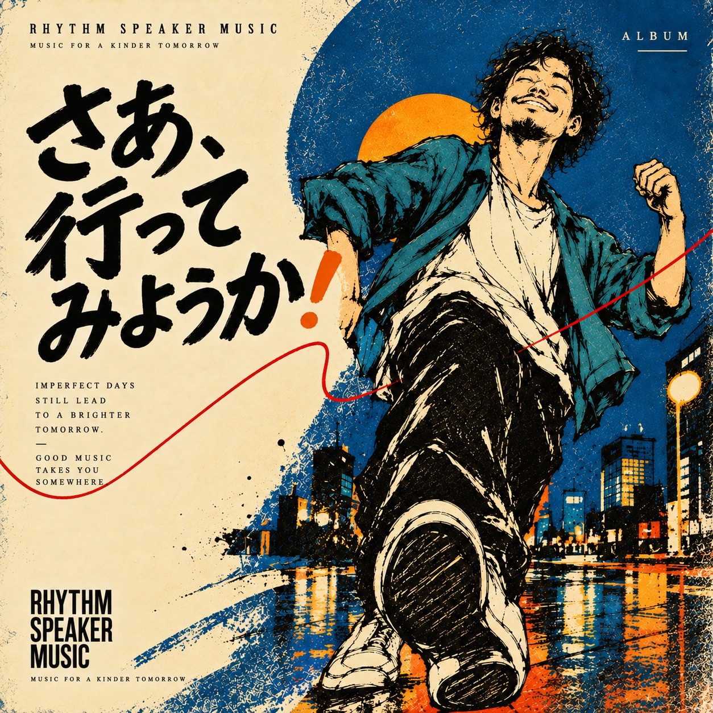

OFFICIAL LABEL / RHYTHM SPEAKER
MUSIC FOR A
KINDER TOMORROW.
Soul、Funk、Jazz、R&B。身体が自然に動くグルーヴと、日常に残る言葉を。RHYTHM SPEAKER MUSICは、Rhythm Speakerが運営するオリジナル音楽レーベルです。
OFFICIAL DISCOGRAPHY


OFFICIAL DISCOGRAPHY
ALBUMS
正式レーベル立ち上げ後のOfficial Albumのみを掲載しています。作品を詳しく見るか、そのままYouTubeで聴くかを選べます。
LISTEN
まず、聴く。
RHYTHM SPEAKER MUSICのPrimary Listening Surfaceは、公式YouTubeチャンネルです。Album Pageでは作品の背景やTrack Listを整理し、YouTubeでの再生へつなぎます。